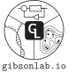

Travis E. Gibson
 |
Travis E. Gibson, Gibson Lab Senior Administrative Assistant |
News
New Gibson Lab website https://gibsonlab.io (for the most up to date information)

Jen Dawkins passed her PhD qualifying exam.
New lab member - Younhun Kim a PhD student in applied mathematics at MIT.
2020, October
New lab member - Zach Gromko an undergradute student supported by MIT UROP.
Travis is a co-investigator on a $2.9 Million NSF grant: MTM 2: The rules of microbiota colonization of the mammalian gut (we are hiring students for this project)
Interested graduate students, rotation students, or post-docs can reach out at any time.
Education
PhD, Massachusetts Institute of Technology
MS, Massachusetts Institute of Technology
BS, Georgia Institute of Technology
Research and Current Projects
We leverage tools from machine learning and control to understand biological systems. Current and future projects:
Statistical learning applied to microbial dynamics (Bayesian nonparametrics, layered latent state-space models)
Genetically engineering and controlling a microbial consortia
Theoretical foundations at the intersection of machine learning and control
Host-Microbiome interactions
Time series metagenomics
Selected Publications: (Google Scholar)
Provably Correct Learning Algorithms in the Presence of Time-Varying Features Using a Variational Perspective
J.E. Gaudio, T.E. Gibson, A.M. Annaswamy, and M.A. Bolender
arXiv, 2019
Dynamic Modulation of the Gut Microbiota and Metabolome by Bacteriophages in a Mouse Model
B.B. Hsu, T.E. Gibson, V. Yeliseyev, Q. Liu, L. Bry, P.A. Silver, G.K. Gerber
Cell Host and Microbe, 2019
Robust and Scalable Models of Microbiome Dynamics
T.E. Gibson and G.K. Gerber
International Conference on Machine Learning, 2018
Convergence Properties of Adaptive Systems and the Definition of Exponential Stability
B.M. Jenkins, A.M. Annaswamy, E. Lavretsky, and T.E. Gibson
SIAM Journal on Control and Optimization, 2018
Universality of human microbial dynamics
A. Bashan, T.E. Gibson, J. Friedman, V.J. Carey, S.T. Weiss, E.L. Hohmann and Y.-Y. Liu
Nature, 534, 259–262, 2016
Links
Gibson Lab Website
Harvard Scholar
MIT directory
Harvard Catalyst directory
Division of Computational Pathology
Google Scholar